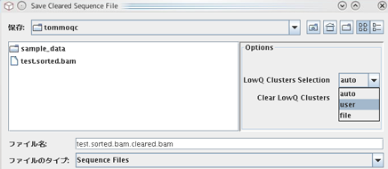
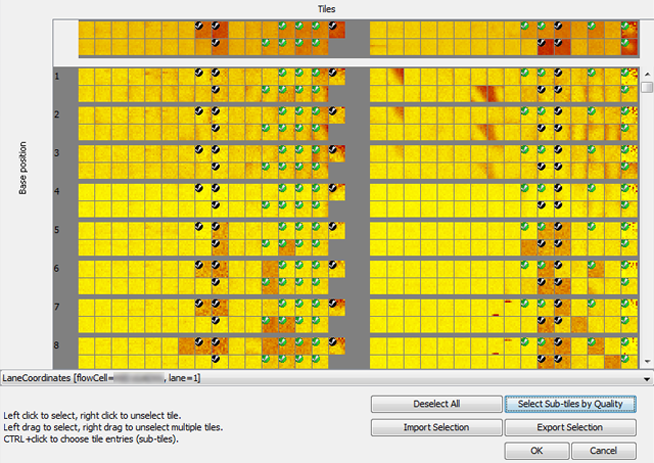
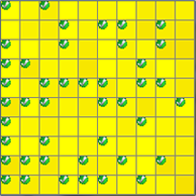
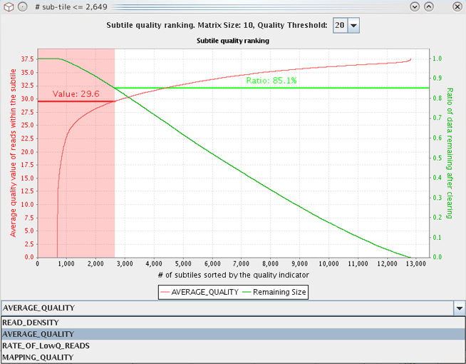

The SUGAR has a function to generate a "cleared" sequence file. This "data cleaning" operation deletes sequence reads or changes nucleotide bases to "N" base that are sequenced from low-quality tiles/subtiles defined by the users or automatically by the SUGAR, and produces a new sequence file without those low-quality read/base data. This function can be applied to Fastq, SAM, and BAM files (including mapped SAM/BAM). The cleared sequence file is saved in a same format with the original input file.
The data cleaning operation is done by two steps. First, low-quality tiles or subtiles are selected by manual operation using quality-heatmap graphs mouse clicking, or automated analysis on the basis of line graphs of "Subtile quality ranking." Then, sequence reads within the selected low-quality tiles/subtiles are removed from the oridinal data file ("delete" operation). Or, all nucleotide bases within the selected low-quality base position of the tiles/subtiles are changed to "N" base from the original data file ("change" operation). The cleaned data will be saved as a new file with a new file name (see below).
Operation to generate a new "cleared" sequence file is done as followings:

The data cleaning operation may take time particularly in the large-sized SAM and BAM files. The required time is approximately same with the time for loading original sequence file when the cache function is not applied. The cleared sequence file can also be saved by running the SUGAR in non-interactive command line mode.
To select the low-quality tiles/subtiles based on the quality heatmaps and line graphs via GUI, choose the option 'user' in the "Save Cleared Sequence File" dialog and click the SAVE button. It opens the" Select LowQ Clusters" dialog box shown below.

This window allows users to individually select the tiles and subtiles to be cleared with GUI guide and mouse clicking.

In the 'delete' operation mode (see "Data cleaning operation details" in this page), the tile/subtile selection is automatically applied to the all base positions of the selected tiles/subtiles. This means that the whole sequence reads in the selected tiles/subtiles will be deleted in a newly saved "cleared" sequence file.
A partially selected tiles (indicated by the green checkmarks) cannot be fully selected by a left mouse click. To change partial selection to full-tile selection, cancel the partial selection of the tile by right click, and then select it again by left click.
Not only the manual selection operations described above, an automated subtile-based data cleaning can be conducted by pressing the button "Select Sub-tiles by Quality" from the same "Select LowQ Clusters" dialog box (shown above). This opens a new window illustrated below to offer the automated operations.

In this line graph subtiles are ordered by quality indicators chosen from the dropdown menu (READ_DENSITY, AVERAGE_QUALITY, RATE_OF_LowQ_READS, and MAPPING_QUALITY; for details, see the section "Subtile quality ranking") and positioned along the X (horizontal) axis from low-quality ones on the left-side to high-quality ones on the right-side. Users can select low-quality part (indicated by red shading) of the data for automated deletion as follows:
When the quality indicator 'RATE_OF_LowQ_READS' was selected, the value of 'Quality Threshold' shown in the combo-box at the top of the screen may play an important role. Different line graphs will be generated for the different QV threshold values. In general, the higher the QV threshold, this quality indicator (proportion of low-quality reads) is also elevated.
The "Export Selection" button enables to save the information about currently selected tiles to a disk file. The file can be imported by the "Import Selection" button to apply the saved tile/subtile selection state to the other analyses of the same or another data file that has the same structure of tiles, subtiles (resolution), and flowcell versions.